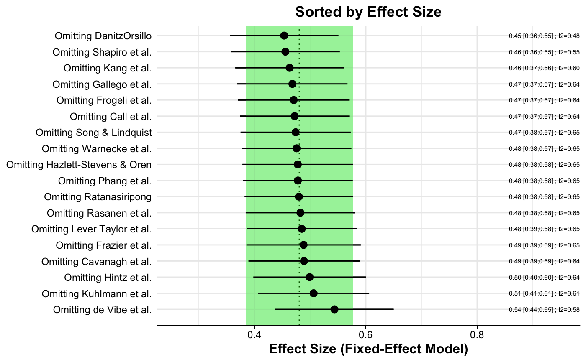
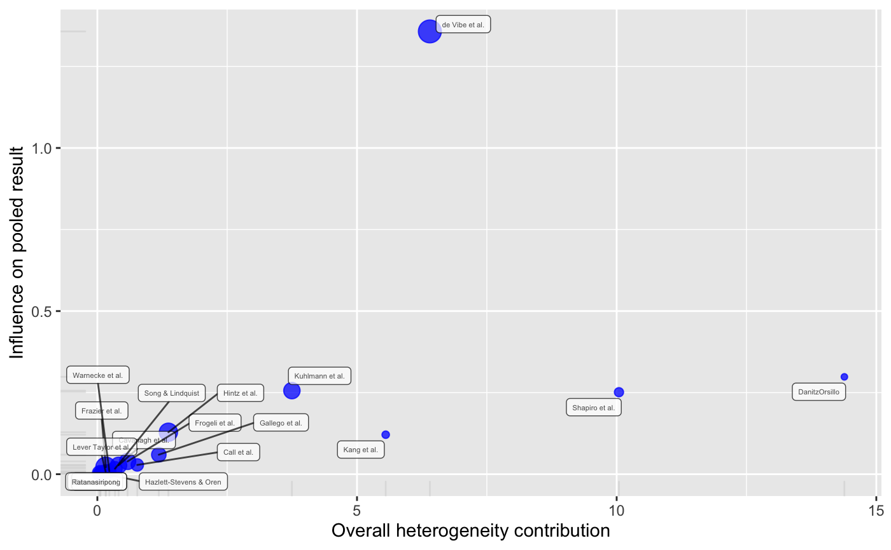
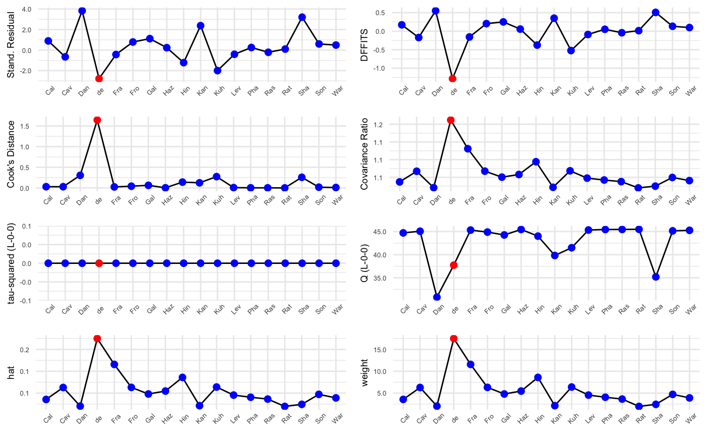
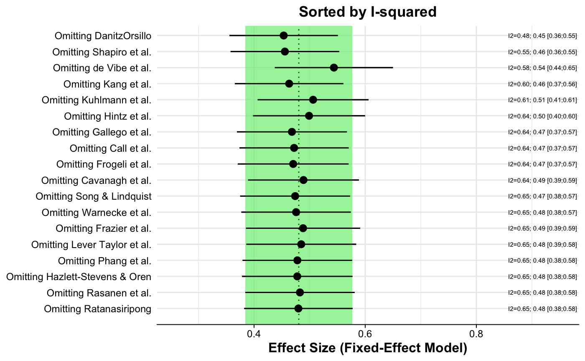

Conducts an influence analysis of a meta-analysis generated by meta functions,
and allows to produce influence diagnostic plots.
InfluenceAnalysis(x, random = FALSE, subplot.heights = c(30,18), subplot.widths = c(30,30), forest.lims = 'default', return.separate.plots = FALSE, text.scale = 1)
Arguments
| x | An object of class |
|---|---|
| random | Logical. Should the random-effects model be used to generate the influence diagnostics?
Uses the |
| subplot.heights | Concatenated array of two numerics. Specifies the heights of the
first (first number) and second (second number) row of the overall plot generated when plotting the results.
Default is |
| subplot.widths | Concatenated array of two numerics. Specifies the widths of the
first (first number) and second (second number) column of the overall results plot generated when plotting the results.
Default is |
| forest.lims | Concatenated array of two numerics. Specifies the x-axis limits of the forest plots
generated when plotting the results. Use |
| return.separate.plots | Logical. When plotted, should the influence plots be shown as separate plots in lieu of returning them in one overall plot? |
| text.scale | Positive numeric. Scaling factor for the text geoms used when plotting the results. Values <1 shrink the
text, while values >1 increase the text size. Default is |
Value
A list object of class influence.analysis containing the
following objects is returned (if results are saved to a variable):
BaujatPlot: The Baujat plotInfluenceCharacteristics: The Viechtbauer-Cheung influence characteristics plotForestEffectSize: The forest plot sorted by effect sizeForestI2: The forest plot sorted by between-study heterogeneityData: Adata.framecontaining the data used for plotting.
Otherwise, the function prints out (1) the results of the Leave-One-Out Analysis (sorted by \(I^2\)),
(2) the Viechtbauer-Cheung Influence Diagnostics and (3) Baujat Plot data (sorted by heterogeneity contribution),
in this order. Plots can be produced manually by plugging a saved object of class InfluenceAnalysis generated by
the function into the plot function. It is also possible to only produce one specific plot by
specifying the name of the plot as a character in the second argument of the plot call (see Examples).
Details
The function conducts an influence analysis using the "Leave-One-Out" paradigm internally
and produces data for four influence diagnostics. Diagnostic plots can be produced by saving the output of the
function to an object and plugging it into the plot function.
These diagnostics may be used to determine which study or effect size
may have an excessive influence on the overall results of a meta-analysis and/or contribute substantially to
the between-study heterogeneity in an analysis. This may be used for outlier detection and to test
the robustness of the overall results found in an analysis. Results for four diagnostics are calculated:
Baujat Plot: Baujat et al. (2002) proposed a plot to evaluate heterogeneity patterns in a meta-analysis. The x-axis of the Baujat plot shows the overall heterogeneity contribution of each effect size while the y-axis shows the influence of each effect size on the pooled result. The
baujatfunction is called internally to produce the results. Effect sizes or studies with high values on both the x and y-axis may be considered to be influential cases; effect sizes or studies with high heterogeneity contribution (x-axis) and low influence on the overall results can be outliers which might be deleted to reduce the amount of between-study heterogeneity.Influence Characteristics: Several influence analysis diagnostics proposed by Viechtbauer & Cheung (2010). Results are calculated by an internal call to
influence.rma.uni. In the console output, potentially influential studies are marked with an asterisk (*). When plotted, effect sizes/studies determined to be influential cases using the "rules of thumb" described in Viechtbauer & Cheung (2010) are shown in red. For further details, see the documentation of theinfluence.rma.unifunction.Forest Plot for the Leave-One-Out Analysis, sorted by Effect Size: This displays the effect size and \(I^2\)-heterogeneity when omitting one of the \(k\) studies each time. The plot is sorted by effect size to determine which studies or effect sizes particularly affect the overall effect size. Results are generated by an internal call to
metainf.Forest Plot for the Leave-One-Out Analysis, sorted by \(I^2\): see above; results are sorted by \(I^2\) to determine the study for which exclusion results in the greatest reduction of heterogeneity.
References
Harrer, M., Cuijpers, P., Furukawa, T.A, & Ebert, D. D. (2019). Doing Meta-Analysis in R: A Hands-on Guide. DOI: 10.5281/zenodo.2551803. Chapter 6.3
DerSimonian R. & Laird N. (1986), Meta-analysis in clinical trials. Controlled Clinical Trials, 7, 177–188.
Viechtbauer, W., & Cheung, M. W.-L. (2010). Outlier and influence diagnostics for meta-analysis. Research Synthesis Methods, 1, 112–125.
See also
Examples
# Load 'ThirdWave' data data(ThirdWave) # Create 'meta' meta-analysis object suppressPackageStartupMessages(library(meta)) meta = metagen(TE, seTE, studlab = paste(ThirdWave$Author), data=ThirdWave) # Run influence analysis; specify to return separate plots when plotted inf.an = InfluenceAnalysis(meta, return.separate.plots = TRUE)#> [===========================================================================] DONE# Show results in console inf.an#> Leave-One-Out Analysis (Sorted by I2) #> ----------------------------------- #> Effect LLCI ULCI I2 #> Omitting DanitzOrsillo 0.453 0.356 0.551 0.481 #> Omitting Shapiro et al. 0.456 0.358 0.553 0.546 #> Omitting de Vibe et al. 0.544 0.437 0.650 0.576 #> Omitting Kang et al. 0.463 0.366 0.561 0.598 #> Omitting Kuhlmann et al. 0.506 0.406 0.606 0.614 #> Omitting Hintz et al. 0.499 0.398 0.600 0.636 #> Omitting Gallego et al. 0.468 0.369 0.567 0.638 #> Omitting Call et al. 0.472 0.374 0.570 0.642 #> Omitting Frogeli et al. 0.470 0.371 0.570 0.644 #> Omitting Cavanagh et al. 0.489 0.389 0.589 0.645 #> Omitting Song & Lindquist 0.474 0.375 0.573 0.646 #> Omitting Frazier et al. 0.488 0.386 0.591 0.647 #> Omitting Lever Taylor et al. 0.485 0.386 0.584 0.647 #> Omitting Warnecke et al. 0.476 0.377 0.574 0.647 #> Omitting Hazlett-Stevens & Oren 0.478 0.378 0.577 0.648 #> Omitting Phang et al. 0.478 0.379 0.577 0.648 #> Omitting Rasanen et al. 0.483 0.384 0.581 0.648 #> Omitting Ratanasiripong 0.480 0.382 0.577 0.648 #> #> #> Influence Diagnostics #> ------------------- #> rstudent dffits cook.d cov.r QE.del hat #> Omitting Call et al. 0.893 0.172 0.029 1.037 44.706 0.036 #> Omitting Cavanagh et al. -0.661 -0.171 0.029 1.067 45.066 0.063 #> Omitting DanitzOrsillo 3.832 0.552 0.305 1.021 30.819 0.020 #> Omitting de Vibe et al. -2.786 -1.283 1.645 1.212 37.742 0.175 #> Omitting Frazier et al. -0.431 -0.156 0.024 1.131 45.317 0.116 #> Omitting Frogeli et al. 0.788 0.205 0.042 1.067 44.882 0.063 #> Omitting Gallego et al. 1.115 0.251 0.063 1.051 44.260 0.048 #> Omitting Hazlett-Stevens & Oren 0.235 0.057 0.003 1.058 45.447 0.055 #> Omitting Hintz et al. -1.223 -0.375 0.141 1.094 44.006 0.086 #> Omitting Kang et al. 2.382 0.352 0.124 1.022 39.829 0.021 #> Omitting Kuhlmann et al. -2.001 -0.523 0.274 1.068 41.500 0.064 #> Omitting Lever Taylor et al. -0.409 -0.089 0.008 1.048 45.336 0.046 #> Omitting Phang et al. 0.252 0.052 0.003 1.042 45.439 0.041 #> Omitting Rasanen et al. -0.215 -0.042 0.002 1.038 45.456 0.036 #> Omitting Ratanasiripong 0.100 0.014 0.000 1.020 45.493 0.020 #> Omitting Shapiro et al. 3.209 0.508 0.258 1.025 35.207 0.024 #> Omitting Song & Lindquist 0.597 0.133 0.018 1.050 45.146 0.047 #> Omitting Warnecke et al. 0.490 0.099 0.010 1.041 45.263 0.039 #> weight infl #> Omitting Call et al. 3.567 #> Omitting Cavanagh et al. 6.293 #> Omitting DanitzOrsillo 2.032 #> Omitting de Vibe et al. 17.490 * #> Omitting Frazier et al. 11.571 #> Omitting Frogeli et al. 6.317 #> Omitting Gallego et al. 4.808 #> Omitting Hazlett-Stevens & Oren 5.478 #> Omitting Hintz et al. 8.598 #> Omitting Kang et al. 2.134 #> Omitting Kuhlmann et al. 6.399 #> Omitting Lever Taylor et al. 4.557 #> Omitting Phang et al. 4.065 #> Omitting Rasanen et al. 3.647 #> Omitting Ratanasiripong 1.967 #> Omitting Shapiro et al. 2.441 #> Omitting Song & Lindquist 4.722 #> Omitting Warnecke et al. 3.914 #> #> #> Baujat Diagnostics (sorted by Heterogeneity Contribution) #> ------------------------------------------------------- #> HetContrib InfluenceEffectSize #> Omitting DanitzOrsillo 14.385 0.298 #> Omitting Shapiro et al. 10.044 0.251 #> Omitting de Vibe et al. 6.403 1.357 #> Omitting Kang et al. 5.552 0.121 #> Omitting Kuhlmann et al. 3.746 0.256 #> Omitting Hintz et al. 1.368 0.129 #> Omitting Gallego et al. 1.183 0.060 #> Omitting Call et al. 0.768 0.028 #> Omitting Frogeli et al. 0.582 0.039 #> Omitting Cavanagh et al. 0.409 0.027 #> Omitting Song & Lindquist 0.339 0.017 #> Omitting Warnecke et al. 0.230 0.009 #> Omitting Frazier et al. 0.164 0.021 #> Omitting Lever Taylor et al. 0.159 0.008 #> Omitting Phang et al. 0.061 0.003 #> Omitting Hazlett-Stevens & Oren 0.052 0.003 #> Omitting Rasanen et al. 0.044 0.002 #> Omitting Ratanasiripong 0.010 0.000